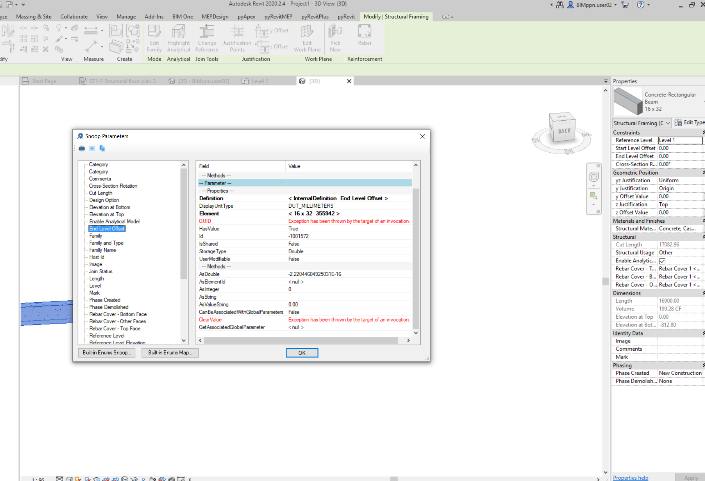
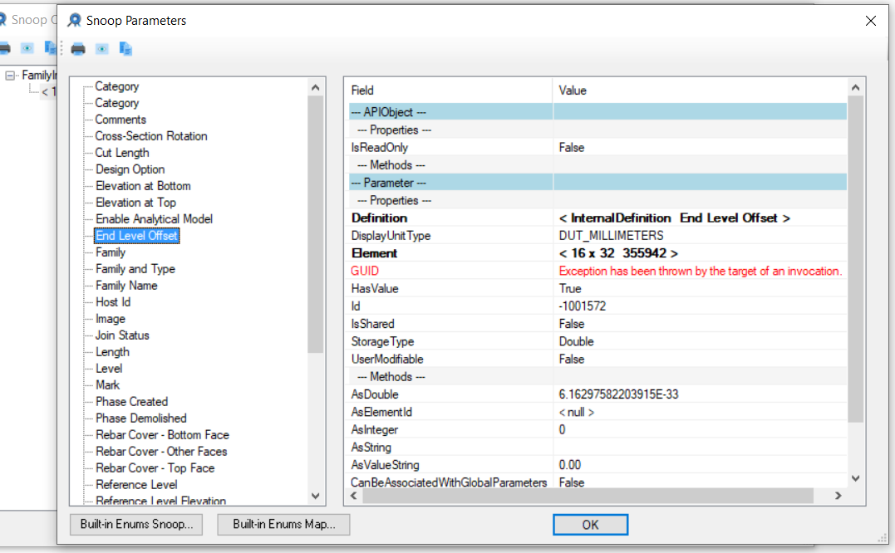

Autodesk University 2021, Python, Fuzz and Break
AU registration is open, fuzzy comparison is important for real numbers, Python learning material and time for a break:
- Autodesk University 2021 open and free
- Real number comparison requires fuzz
- Getting started with Python
- Vacation time
Autodesk University 2021 Open and Free
Registration is live for Autodesk University 2021.
This year the event is a free, virtual and global conference held on October 5-14.
For more info on the conference as a whole, visit the conference page.
If you are curious what Forge is doing, please check out the web page and blog:
Real Number Comparison Requires Fuzz
On a digital computer, all real number comparisons require fuzz.
This means that you cannot compare two real numbers directly. Instead, you test whether they are close enough together, where 'close enough' is defined by a given tolerance. The tolerance depends on the context and the type of comparison being made.
Revit BIM geometry often ends up with significant imprecision due to various complex editing steps, so fuzz is especially important in this area.
This was highlighted yet again by the recent Revit API discussion forum thread on a weird double value supposed to be zero but isn't:
Question: This happens after I set the beam family parameter Start Level Offset and End Level Offset to any non-zero value and then change it back to zero again:


Answer: This is due to the imprecision associated with real numbers in digital computers.
The 'weird' number that you see is not really weird at all.
It is just a very small number written in exponential or scientific notation. Read about:
From your description, it was generated by adding an offset and subtracting it again. Both of the offsets were not represented precisely, e.g., because they were converted from metric to imperial units. The result is imprecise, almost exactly zero, but very slightly off.
That is completely normal and must be taken into account whenever dealing with real numbers of a digital computer, for instance, in many operations, e.g., comparisons, by adding some fuzz:
- Fuzzy comparison
- Fuzzy comparison versus exact arithmetic for curve intersection
- Importance of fuzz for curtain wall dimensioning
The same issue came up again right away in the discussion on element geometry not returning expected face count.
As Rudi @Revitalizer Honke very succinctly puts it:
when comparing double values, it is necessary to add some tolerance.
Values may differ by 0.000000001, for example.
Getting Started with Python
In case you are considering learning Python, or to get started with programming in general, freecodecamp published the ultimate guide on getting started with Python.
For more material on Dynamo, Python, and .NET, please refer to our earlier notes on
- Python and Ruby Scripting Resources and the Sharp Glyph
- Interactive Revit Database Exploration with the Python Shell
- Python Tutorials
- RevitPythonShell Dynamic Model Updater Tutorial
- Retrieving a C# out Argument Value in Python
- Determining RVT File Version Using Python
- Cyril's Python HVAC Blog
- Rotating Elements Around Their Centre in Python
- Python Popularity Growing
- Retrieving Linked IfcZone Elements Using Python
- Retrieve RVT Preview Thumbnail Image with Python
- Pet Change – Python + Dynamo Swap Nested Family
- Duplicate Legend Component in Python
- Convert Latitude and Longitude to Metres in Python
- C# versus Python
- Python and .NET
- Python and Dynamo Autotag Without Overlap
- Learning Python and Dynamo
- Take Dynamo Further Using Python
Vacation Time
I'll be mostly offline for the coming three weeks, from July 26 until August 13, spending time in nature in different parts of Switzerland.
I wish you a happy and fruitful time until I return.